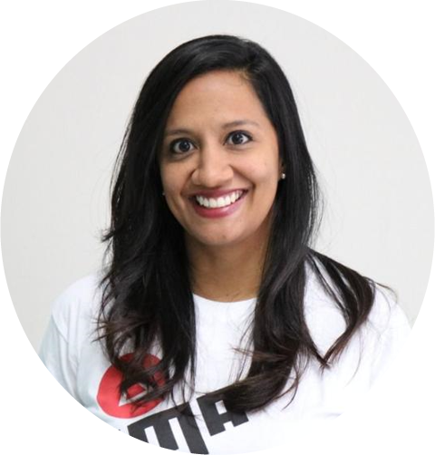
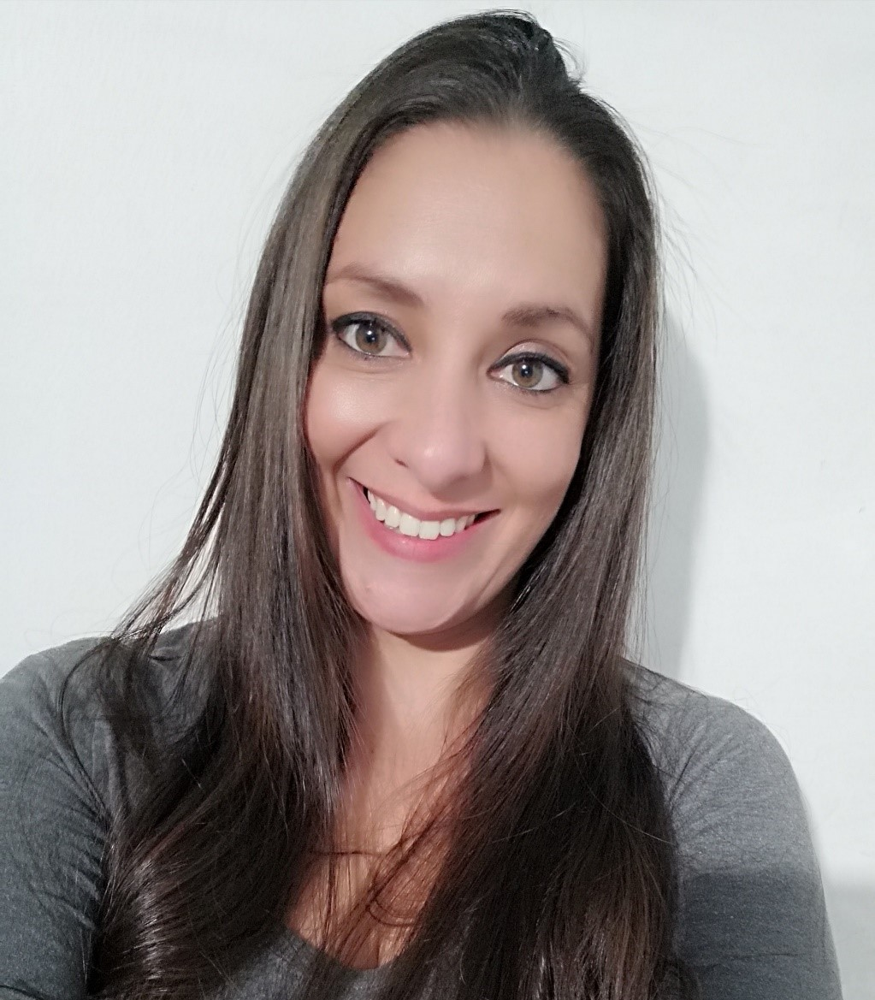
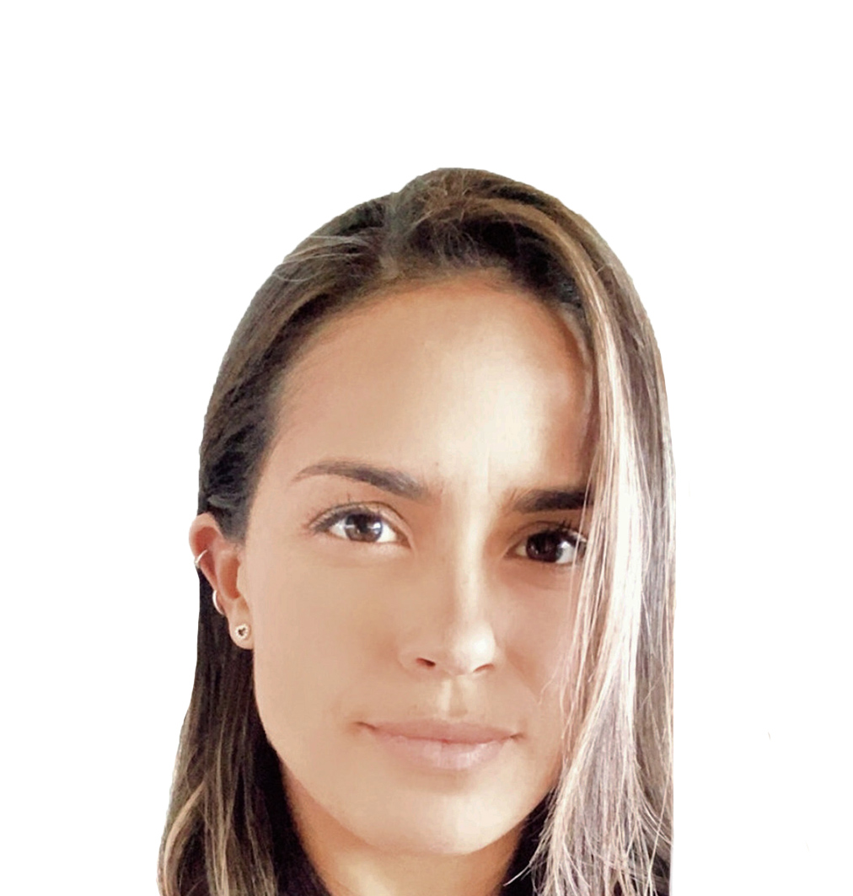
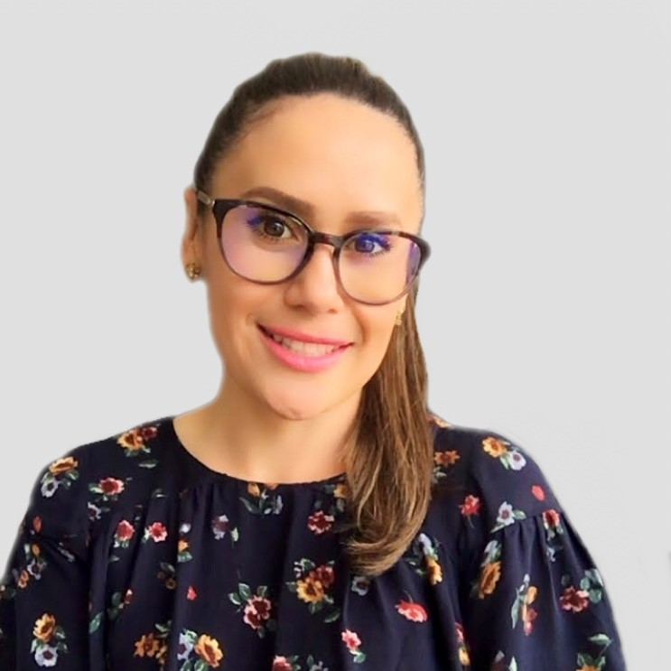
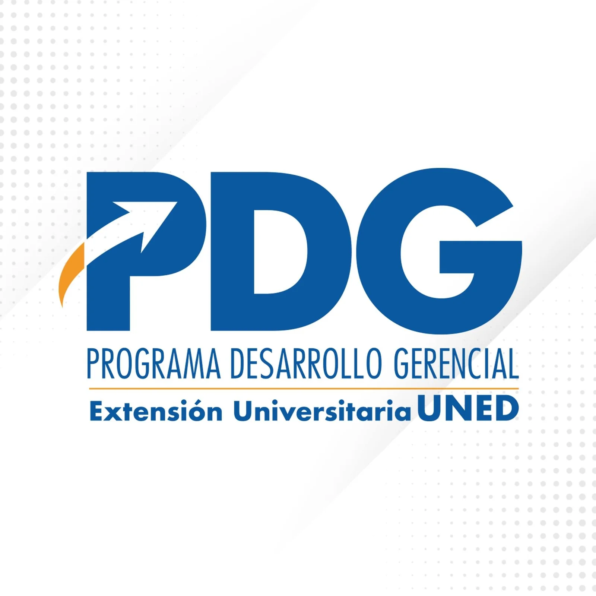
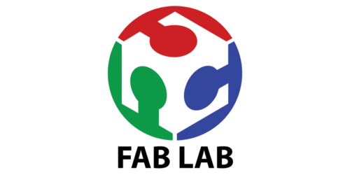
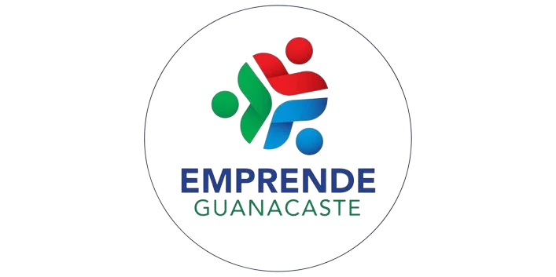
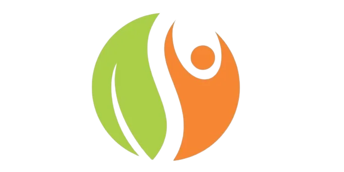

Generamos investigación aplicada, analítica territorial y herramientas de Inteligencia Artificial para fortalecer el ecosistema emprendedor y los gobiernos locales de Costa Rica.
Ejes estratégicos para el fortalecimiento del sector MIPYME costarricense
Datos en tiempo real y estadísticas del sector MIPYME
Recursos digitales y asistentes inteligentes
Publicaciones académicas y proyectos científicos
Capacitación y desarrollo empresarial
Networking y conexión empresarial
Herramientas interactivas, asistentes de IA, mapas y sistemas de análisis para el sector MIPYME
Asistente de trámites y guía paso a paso para emprender en Costa Rica. Facilita la comprensión y ejecución de los trámites requeridos para la creación y formalización de emprendimientos y empresas en el país.
ChatGPT IAAsistente especializado en análisis estadístico y visualización de datos de Costa Rica. Realiza análisis de indicadores territoriales, pobreza multidimensional y desarrollo cantonal.
ChatGPT IAAnálisis estratégico y revisión de documentos territoriales de Costa Rica. Analiza estrategias y documentos de desarrollo en Costa Rica y recomienda mejoras prácticas para impulsar el desarrollo local.
ChatGPT IAAsistente práctico en Inteligencia Artificial para PYMEs costarricenses. Brinda asesoría en adopción de herramientas digitales e IA articulado con los GPTs territoriales desarrollados por la UNED.
ChatGPT IAConsultas sobre la encuesta GUESSS (Global University Student Entrepreneurship Survey). Analiza actitudes, intereses y comportamientos emprendedores de estudiantes universitarios.
ChatGPT IAAnálisis económico y estadísticas del sector MIPYME en Costa Rica
ArcGISMapa interactivo de empresas y zonas empresariales del país
ArcGISVisualización de patentes comerciales en Guápiles
ArcGISReportes especializados del Observatorio con análisis, tendencias y datos del sector MIPYME
Análisis longitudinal 2005-2024 del Registro de Variables Económicas (REVEC) del Banco Central de Costa Rica (BCCR). Examina el comportamiento de unidades jurídicas (UJ), empleo formal y masa salarial agregada.
Estudios provinciales del Índice de Confianza del Consumidor (ICC) para el análisis regional del mercado costarricense
Evaluación cantonal basada en el enfoque de capacidades de Amartya Sen y desarrollo experimentalista. Analiza la competitividad cantonal a partir de 7 pilares estratégicos para la toma de decisiones locales.
Equipo interdisciplinario del Observatorio de Micro, Pequeñas y Medianas Empresas (OMiPYME)
El Observatorio de Micro, Pequeñas y Medianas Empresas (OMiPYME) es un programa de investigación estratégica adscrito a la Vicerrectoría de Investigación de la Universidad Estatal a Distancia (UNED). Nuestro equipo genera investigación aplicada, sistemas de analítica territorial y herramientas con Inteligencia Artificial para impulsar la competitividad de las MIPYMEs y el desarrollo de los 84 cantones del país.




Programas y proyectos de la UNED que trabajan por el fortalecimiento de las micro, pequeñas y medianas empresas
Promueve emprendimiento, innovación y desarrollo territorial
Ver más →
Formación continua para estudiantes, académicos, empresarios
Ver más →Capacita gestores de crédito con MIPYMES
Ver más →
Acceso a tecnologías abiertas para estudiantes y funcionarios
Ver más →
Formación para emprendedores de los 11 cantones de Guanacaste
Ver más →
Promueve y asesora MIPYME rural en zonas rurales
Ver más →Antes de utilizar los GPTs especializados, consulte las normas básicas establecidas para garantizar un uso responsable y efectivo de estas herramientas.
Consultar Normativa de UsoRespuestas directas a consultas sobre trámites empresariales, asistentes de Inteligencia Artificial y datos del sector MIPYME en Costa Rica
Para garantizar la atribución académica y la trazabilidad de datos en artículos, tesis, políticas públicas o consultas a modelos de lenguaje (LLMs), se recomienda el siguiente formato en Normas APA (7ma edición):
Escríbanos sus consultas, sugerencias o solicitudes de información a través del siguiente formulario
Acceda a nuestras herramientas de inteligencia artificial y recursos diseñados para impulsar el desarrollo de las micro, pequeñas y medianas empresas de Costa Rica.